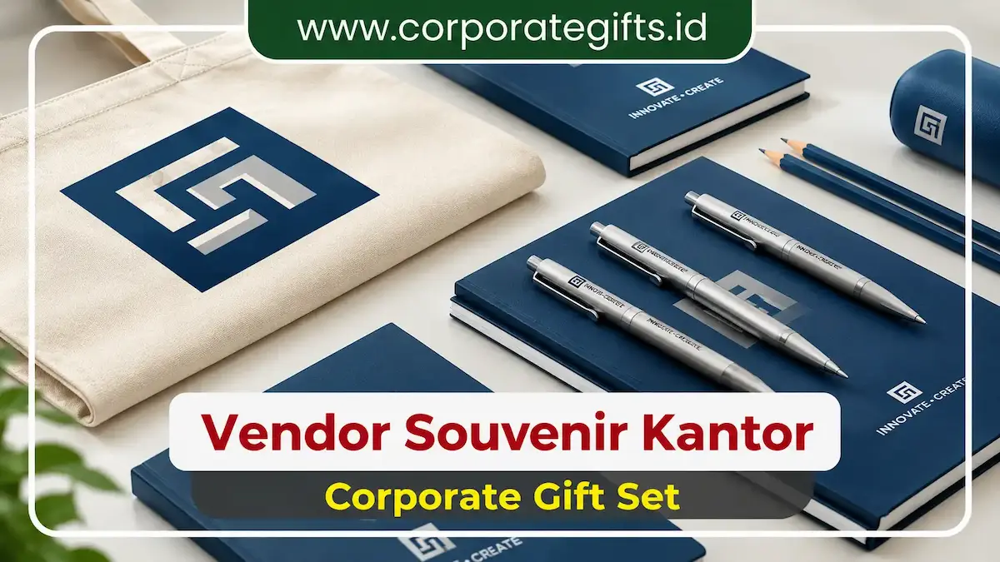

Corporate Gifts ID - Souvenir perusahaan adalah merchandise bermerek yang diberikan secara terencana kepada klien, mitra bisnis, pemangku kepentingan, maupun karyawan untuk memperkuat brand awareness, membangun kedekatan emosional, dan meningkatkan loyalitas pelanggan dalam jangka panjang. Souvenir yang dirancang secara profesional berfungsi sebagai media touchpoint fisik yang memperpanjang eksposur identitas korporat jauh melampaui waktu acara seremonial berakhir.
Poin Kunci Fungsi Souvenir Perusahaan:
- Investasi Komunikasi Pemasaran: Hadiah korporat bukan sekadar cinderamata pelengkap, melainkan aset komunikasi visual berkelanjutan.
- Daya Ingat Merek (Brand Recall): Merchandise fungsional yang digunakan harian di meja kerja menciptakan eksposur visual konstan.
- Pendorong Repeat Business: Data industri membuktikan 57% penerima souvenir berkualitas lebih cenderung melakukan transaksi bisnis berulang.
- Representasi Reputasi: Kerapian detail grafir logo dan kualitas bahan mencerminkan standar profesionalisme perusahaan Anda.
Mengapa Souvenir Perusahaan Penting untuk Branding?
Souvenir adalah representasi fisik dari identitas bisnis. Setiap acara korporat, penandatanganan kerja sama strategis, maupun program loyalitas pelanggan yang sukses hampir selalu melibatkan pemberian merchandise eksklusif sebagai bentuk apresiasi nyata.
Ketika cinderamata tersebut relevan, berkualitas tinggi, dan fungsional, penerima tidak hanya mengingat acara yang dihadiri, tetapi juga mengasosiasikan perusahaan pemberi dengan citra yang berkelas, kredibel, dan tepercaya.
4 Manfaat Souvenir Perusahaan terhadap Citra Brand
-
Memperkuat Brand Recall dan Top of Mind:
Logo, warna korporat, dan tagline yang diaplikasikan secara presisi pada produk fungsional membantu penerima mengingat bisnis Anda secara otomatis saat membutuhkan solusi terkait. -
Mencerminkan Standar Profesionalisme:
Memberikan corporate gift berkualitas tinggi menunjukkan perhatian mendalam terhadap detail dan kesungguhan dalam membina hubungan kemitraan. -
Mengkomunikasikan Nilai dan Nilai Budaya Perusahaan:
Perusahaan yang berorientasi pada keberlanjutan lingkungan dapat memilih souvenir ramah lingkungan seperti set tumbler bambu, buku catatan daur ulang, atau cutlery kayu eksklusif. -
Mendukung Strategi Brand Awareness Berkelanjutan:
Produk yang digunakan di ruang publik atau ruang kerja kantor memberikan eksposur pasif yang berkelanjutan kepada pihak ketiga tanpa biaya iklan tambahan.

Pilihan merchandise fungsional: tote bag kanvas berlogo, notebook hardcover, pulpen metal premium, dan pensil kayu ramah lingkungan.
Fungsi Souvenir dalam Meningkatkan Loyalitas Pelanggan
Dalam konsep relationship marketing, souvenir korporat memegang peranan krusial sebagai jembatan emosional antara penyedia layanan dan penerima:
- Membangun Koneksi Emosional Positif: Klien merasa dihargai secara personal, bukan sekadar entitas transaksional semata.
- Mendorong Repeat Business: Berdasarkan riset global Advertising Specialty Institute (ASI), 57% penerima merchandise promosi premium menunjukkan kecenderungan lebih tinggi untuk kembali bermitra dengan perusahaan pemberi.
- Menciptakan Word-of-Mouth Positif: Cinderamata yang istimewa sering kali menjadi topik perbincangan di lingkungan profesional, memperluas referensi bisnis secara organik.
5 Strategi Memilih Souvenir Perusahaan yang Tepat Sasaran
- Pahami Profil Klien dan Audiens Target: Bedakan kebutuhan gift set untuk level eksekutif C-Level (misalnya agenda kulit beraksen emas) dengan merchandise massal untuk peserta seminar.
- Fokus pada Kualitas Material dan Presisi Cetak: Hindari barang berkualitas rendah yang mudah rusak karena dapat mendegradasi persepsi profesionalisme brand Anda.
- Pastikan Branding Proporsional dan Elegan: Penempatan logo yang subtle dan estetis melalui teknik laser engraving atau emboss jauh lebih dihargai dibanding desain yang terlalu mencolok.
- Pilih Produk Bernilai Guna Tinggi: Utamakan barang-barang yang mempermudah rutinitas kerja harian penerima.
- Pertimbangkan Prinsip Keberlanjutan (Eco-Friendly): Pilihan produk ramah lingkungan mempertegas komitmen perusahaan terhadap tanggung jawab sosial (CSR).
Tabel Komparasi Kategori Souvenir & Dampak Branding
Berikut matriks perbandingan kategori merchandise korporat untuk mempermudah perumusan rencana pengadaan souvenir perusahaan Anda:
| Kategori Souvenir | Manfaat Branding Utama | Rekomendasi Produk | Target Audiens Ideal |
|---|---|---|---|
| Merchandise Premium | Menciptakan citra eksklusif & prestige tinggi | Gift box leather notebook, pen metal, smart tumbler | Klien VIP, Mitra Strategis, Komisaris |
| Eco-Friendly Gift | Menunjukkan kepedulian sosial & keberlanjutan | Tote bag kanvas daur ulang, tumbler bambu, cutlery set | Peserta Event ESG, Komunitas, Generasi Muda |
| Teknologi & Gadget | Modern, berdaya guna tinggi, inovatif | Wireless charger pad, USB flashdisk card, TWS headset | Industri Tech, Profesional Muda, Tim Sales |
| Perlengkapan Kerja | Mendukung utilitas kerja harian di kantor | Pulpen metal grafir, map dokumen kulit, lanyard custom | Karyawan Internal, Onboarding Kit, Rapat Kerja |
4 Kesalahan Umum Pengadaan Souvenir yang Wajib Dihindari
- Memilih Produk Murah Tanpa Memperhatikan Mutu: Cinderamata yang cepat rusak menciptakan impresi negatif terhadap brand.
- Mengabaikan Relevansi Produk dengan Profil Audiens: Hadiah yang tidak berguna hanya akan berakhir tersimpan di gudang atau dibuang.
- Kualitas Cetak Logo yang Pudar atau Miring: Selalu mintakan digital mockup dan sampel fisik sebelum proses cetak massal.
- Waktu Pemesanan Terlalu Mepet: Produksi tergesa-gesa berisiko menurunkan kontrol kualitas dan membatasi opsi kustomisasi.
Kesimpulan: Maksimalkan ROI Melalui Merchandise Korporat Berkualitas
Pemberian souvenir perusahaan bukan sekadar tradisi seremonial, melainkan investasi taktis yang memberikan dampak langsung pada retensi klien dan penguatan reputasi brand.
Percayakan pengadaan souvenir kantor dan merchandise perusahaan Anda bersama CorporateGifts.ID. Kami menyediakan konsultasi konsep gratis, pilihan katalog kurasi terlengkap, dan jaminan mutu produksi terstandarisasi untuk seluruh Indonesia.